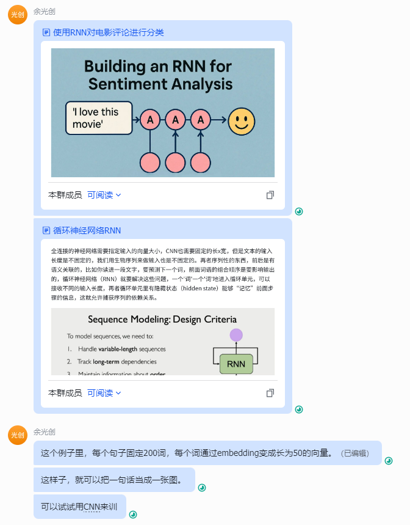
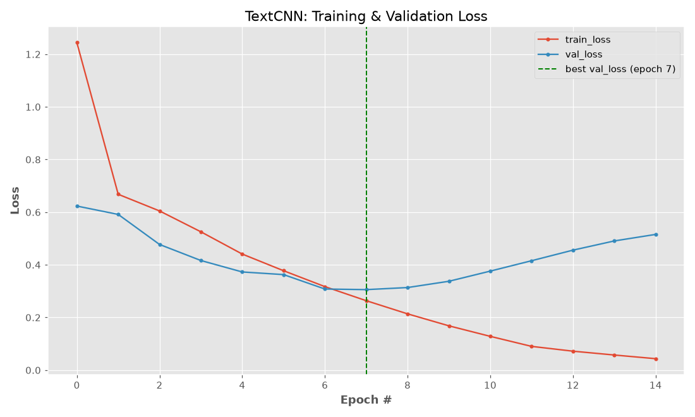
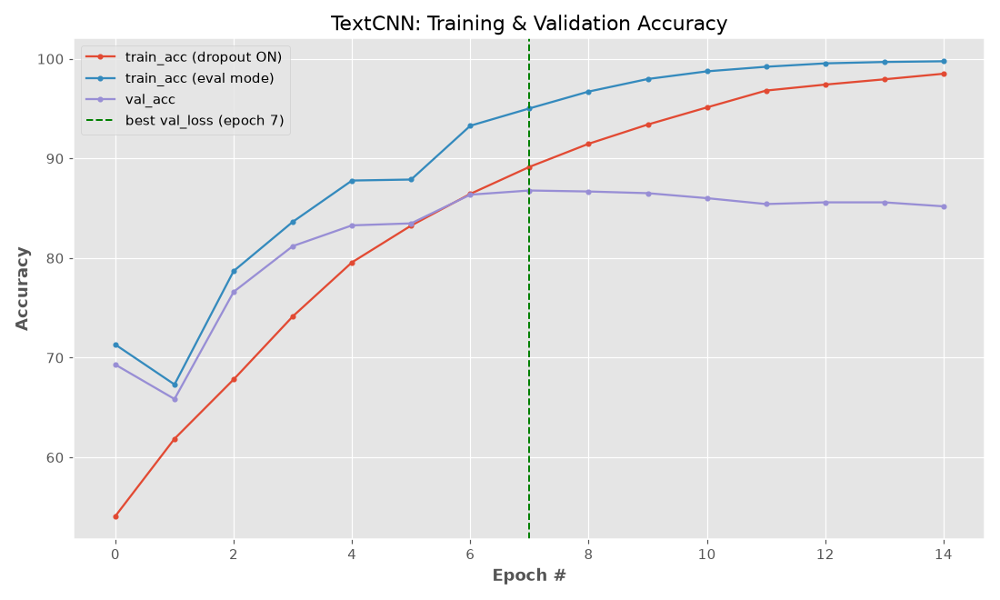

当我写完《使用RNN对电影评论进行分类》笔记，分享给学生的时候，突然就想到：如果每个句子都固定成 200 个词、每个词都用 embedding 映射成 50 维向量，那么每条样本就会变成一个形状为 (200, 50) 的矩阵。这个矩阵可以当成一张“单通道小图片”（(1, 200, 50)），用 CNN 来提取局部模式并做分类。
这一类方法在文本分类里常见的写法是 TextCNN：用多个不同窗口大小的卷积核提取不同长度的 n-gram 特征，然后 max pooling 得到定长向量，接一个全连接层输出分类结果。
这里和《使用RNN对电影评论进行分类》的结构基本上一模一样，只不过模型换了。
数据
下载和读入
下载自以下网址：
import re
import pandas as pd
df = pd.read_csv("data/IMDB-Dataset.csv", header=0, names=["text", "label"])
def tokenize(text: str):
text = text.lower()
text = re.sub(r"<br\s*/?>", " ", text)
text = re.sub(r"[^a-z0-9']+", " ", text)
return text.split()
df["text"] = df["text"].apply(tokenize)
df.head()把 positive 编码成 1，把 negative 编码成 0：
from sklearn.preprocessing import LabelEncoder
le = LabelEncoder()
df["label"] = le.fit_transform(df["label"])预处理
切分成训练集、测试集和验证集，这里使用 stratify 保证类别比例一致：
from sklearn.model_selection import train_test_split
train_data, test_data = train_test_split(
df, test_size=0.2, random_state=42, stratify=df["label"]
)
train_data, val_data = train_test_split(
train_data, test_size=0.1, random_state=42, stratify=train_data["label"]
)构建词表并做编码。这里把 0 留给 padding，把 1 留给 unknown word：
from collections import Counter
counter = Counter(word for phrase in df["text"] for word in phrase)
N = 100000
vocab = [w for w, _ in counter.most_common(N)]
PAD_IDX = 0
UNK_IDX = 1
word_to_index = {word: idx for idx, word in enumerate(vocab, start=2)}把句子编码成定长（200）：
def encode_and_pad(text, word_to_index, max_length, unk_idx=UNK_IDX, pad_idx=PAD_IDX):
encoded = [word_to_index.get(word, unk_idx) for word in text]
if len(encoded) > max_length:
encoded = encoded[:max_length]
else:
encoded += [pad_idx] * (max_length - len(encoded))
return encoded
max_length = 200
train_data["text"] = train_data["text"].apply(
encode_and_pad, word_to_index=word_to_index, max_length=max_length
)
val_data["text"] = val_data["text"].apply(
encode_and_pad, word_to_index=word_to_index, max_length=max_length
)
test_data["text"] = test_data["text"].apply(
encode_and_pad, word_to_index=word_to_index, max_length=max_length
)数据集和数据加载器
import torch
from torch.utils.data import Dataset, DataLoader
class SentimentDataSet(Dataset):
def __init__(self, data):
self.texts = data["text"].values
self.labels = data["label"].values
def __len__(self):
return len(self.texts)
def __getitem__(self, idx):
text = self.texts[idx]
label = self.labels[idx]
return torch.tensor(text, dtype=torch.long), torch.tensor(label, dtype=torch.long)
train_ds = SentimentDataSet(train_data)
val_ds = SentimentDataSet(val_data)
test_ds = SentimentDataSet(test_data)
bs = 64
train_dl = DataLoader(train_ds, batch_size=bs, shuffle=True)
val_dl = DataLoader(val_ds, batch_size=bs, shuffle=False)
test_dl = DataLoader(test_ds, batch_size=bs, shuffle=False)模型：TextCNN（把 (200,50) 当成“图”）
核心是：embedding 后得到 (batch, 200, 50)，再扩一维变成 (batch, 1, 200, 50)。卷积核的宽度取 embed_size=50，这样每次卷积相当于扫过连续的 k 个词（k-gram），每个 k 对应一组卷积核。
import torch.nn as nn
import torch.nn.functional as F
class SentimentCNN(nn.Module):
def __init__(
self,
vocab_size,
embed_size,
num_filters,
kernel_sizes,
output_size,
dropout=0.5,
padding_idx=0,
):
super().__init__()
self.padding_idx = padding_idx
self.embedding = nn.Embedding(vocab_size, embed_size, padding_idx=padding_idx)
self.convs = nn.ModuleList(
[nn.Conv2d(1, num_filters, kernel_size=(k, embed_size)) for k in kernel_sizes]
)
self.dropout = nn.Dropout(dropout)
self.fc = nn.Linear(num_filters * len(kernel_sizes), output_size)
self._init_weights()
def _init_weights(self):
nn.init.xavier_uniform_(self.fc.weight)
nn.init.zeros_(self.fc.bias)
for conv in self.convs:
nn.init.kaiming_uniform_(conv.weight, nonlinearity="relu")
if conv.bias is not None:
nn.init.zeros_(conv.bias)
def forward(self, x):
embedded = self.embedding(x)
embedded = embedded.unsqueeze(1)
conv_outs = [F.relu(conv(embedded)).squeeze(3) for conv in self.convs]
pooled = [F.max_pool1d(c, kernel_size=c.size(2)).squeeze(2) for c in conv_outs]
feat = torch.cat(pooled, dim=1)
feat = self.dropout(feat)
return self.fc(feat)为什么这里可以不做 padding mask？ TextCNN 有个常见的坑：短句补了一堆 PAD，如果卷积在 PAD 上也能产生非零响应，max pooling 就会把这些”空位”选出来当成特征。这份代码之所以安全，靠的是两个初始化约定叠加：
nn.Embedding(..., padding_idx=0)把第 0 行权重固定为全零、且不参与梯度更新，所以PAD位置的 embedding 恒为零向量；_init_weights里nn.init.zeros_(conv.bias)把卷积偏置置零，所以整窗全部落在PAD上时，卷积输出恰好为 0，ReLU 之后仍是 0。
实测：把一条全是 PAD 的样本喂进模型，输出 logits 正好是 [0, 0]。如果卷积偏置不是零，这里会得到一个非零常数，进而被 max pooling 当成”特征”。
所以”不做 mask”在这里是有前提的，不是无条件成立。如果哪天把卷积偏置改成非零初始化、或把 ReLU 换成别的激活，这个前提就没了 —— 那时必须显式 mask：把 PAD 位置的卷积输出置为 -inf 再 pooling。
初始化模型：
vocab_size = len(vocab) + 2
embed_size = 50
num_filters = 128
kernel_sizes = [3, 4, 5]
output_size = 2
model = SentimentCNN(
vocab_size=vocab_size,
embed_size=embed_size,
num_filters=num_filters,
kernel_sizes=kernel_sizes,
output_size=output_size,
dropout=0.5,
padding_idx=PAD_IDX,
)model
# SentimentCNN(
# (embedding): Embedding(100002, 50, padding_idx=0)
# (convs): ModuleList(
# (0): Conv2d(1, 128, kernel_size=(3, 50), stride=(1, 1))
# (1): Conv2d(1, 128, kernel_size=(4, 50), stride=(1, 1))
# (2): Conv2d(1, 128, kernel_size=(5, 50), stride=(1, 1))
# )
# (dropout): Dropout(p=0.5, inplace=False)
# (fc): Linear(in_features=384, out_features=2, bias=True)
# )损失、优化器、调度器和准确率
loss_fn = nn.CrossEntropyLoss()
optim = torch.optim.AdamW(model.parameters(), lr=0.001)
scheduler = torch.optim.lr_scheduler.ReduceLROnPlateau(
optim, mode="min", factor=0.5, patience=2
)
def acc_fn(pred, y):
predicted = pred.argmax(dim=1)
return (predicted == y).float().mean().item() * 100训练模型
训练步骤
device = torch.device("cuda" if torch.cuda.is_available() else "cpu")
def train_step(model, data_loader, loss_fn, optimizer, acc_fn, device=device, max_grad_norm=5.0):
model.train()
train_loss, train_acc = 0.0, 0.0
for X, y in data_loader:
X, y = X.to(device), y.to(device)
optimizer.zero_grad()
logits = model(X)
loss = loss_fn(logits, y)
loss.backward()
torch.nn.utils.clip_grad_norm_(model.parameters(), max_grad_norm)
optimizer.step()
train_loss += loss.item()
train_acc += acc_fn(logits, y)
return train_loss / len(data_loader), train_acc / len(data_loader)测试/评估步骤
def test_step(model, data_loader, loss_fn, acc_fn, device=device):
model.eval()
test_loss, test_acc = 0.0, 0.0
with torch.inference_mode():
for X, y in data_loader:
X, y = X.to(device), y.to(device)
logits = model(X)
loss = loss_fn(logits, y)
test_loss += loss.item()
test_acc += acc_fn(logits, y)
return test_loss / len(data_loader), test_acc / len(data_loader)第一次训练（5 个 epoch，在 Colab 上）
from timeit import default_timer as timer
model = model.to(device)
train_loss, train_acc = [], []
val_loss, val_acc = [], []
epochs = 5
for epoch in range(epochs):
start_time = timer()
trloss, tracc = train_step(
model=model,
data_loader=train_dl,
loss_fn=loss_fn,
optimizer=optim,
acc_fn=acc_fn,
device=device,
)
train_loss.append(trloss)
train_acc.append(tracc)
vloss, vacc = test_step(
model=model,
data_loader=val_dl,
loss_fn=loss_fn,
acc_fn=acc_fn,
device=device,
)
val_loss.append(vloss)
val_acc.append(vacc)
scheduler.step(vloss)
end_time = timer()
print(f"Epoch: {epoch} | Train loss: {trloss:.5f} | Train acc: {tracc:.2f}")
print(f"Epoch: {epoch} | Val loss: {vloss:.5f} | Val acc: {vacc:.2f}")
print(f"Time elapsed: {end_time - start_time:.3f} seconds")# 在Colab里跑的，所以慢点 -，-
Epoch: 0 | Train loss: 1.30965 | Train acc: 53.70
Epoch: 0 | Val loss: 0.64523 | Val acc: 65.55
Time elapsed: 217.333 seconds
Epoch: 1 | Train loss: 0.68632 | Train acc: 60.09
Epoch: 1 | Val loss: 0.55541 | Val acc: 74.06
Time elapsed: 210.956 seconds
Epoch: 2 | Train loss: 0.61752 | Train acc: 66.97
Epoch: 2 | Val loss: 0.52599 | Val acc: 72.50
Time elapsed: 212.012 seconds
Epoch: 3 | Train loss: 0.53742 | Train acc: 73.03
Epoch: 3 | Val loss: 0.42444 | Val acc: 80.08
Time elapsed: 211.552 seconds
Epoch: 4 | Train loss: 0.46057 | Train acc: 78.30
Epoch: 4 | Val loss: 0.36896 | Val acc: 83.13
Time elapsed: 212.748 seconds
第一次训练结束后，在测试集上跑一次：
test_loss_value, test_acc_value = test_step(
model=model, data_loader=test_dl, loss_fn=loss_fn, acc_fn=acc_fn, device=device
)
print(f"Test loss: {test_loss_value:.5f} | Test accuracy: {test_acc_value:.2f}")
# Test loss: 0.36640 | Test accuracy: 83.72复盘：第一版的结论是”欠训练”，不是”CNN 比 RNN 差”
第一版只跑了 5 个 epoch，得到 val acc 83.13%、test acc 83.72%。如果据此下结论说”CNN 不如 RNN”，那是错的，有两个原因。
原因一：训练准确率的统计口径和验证集不一致。
train_step 里用的是 model.train()，dropout 是打开的；test_step 里是 model.eval()，dropout 关闭。所以训练准确率是在”随机丢掉 50% 特征”的状态下统计出来的，天然偏低，不能直接和 val acc 比。日志里 Train acc: 78.30 低于 Val acc: 83.13，看着像”泛化很好”，其实只是口径不同——真实情况是模型还没收敛。
原因二：验证准确率压根没到平台期。
5 个 epoch 的 val acc 是 65.55 → 74.06 → 72.50 → 80.08 → 83.13，一路在涨，既没停滞也没过拟合迹象，说明继续训还能往上走。
之前是在Colab 上跑的， 217 秒/epoch，5 个 epoch 要 18 分钟；现在我搞了张卡了，所以在本地再跑一次。
在下面改两处再跑一遍：① 额外用 model.eval() 统计一次训练准确率，让口径和验证集一致；② epoch 加到 15，并记录验证损失最低的那个 checkpoint（而不是最后一个）。
第二次训练（15 个 epoch，本机 4090）
先提醒一个容易踩的坑：不能在第一次训练完之后接着训。上面那个 model 已经训过 5 个 epoch 了，如果直接再跑 15 个 epoch，实际是 20 个 epoch 的连续训练，而不是”从零训练 15 个 epoch”。所以这里把模型、优化器、调度器全部重新初始化：
# 重新初始化，从零开始训练（否则会接着第一次的权重继续训）
torch.manual_seed(42)
model = SentimentCNN(
vocab_size=vocab_size,
embed_size=embed_size,
num_filters=num_filters,
kernel_sizes=kernel_sizes,
output_size=output_size,
dropout=0.5,
padding_idx=PAD_IDX,
).to(device)
optim = torch.optim.AdamW(model.parameters(), lr=0.001)
scheduler = torch.optim.lr_scheduler.ReduceLROnPlateau(
optim, mode="min", factor=0.5, patience=2
)
from timeit import default_timer as timer
train_loss, train_acc, train_acc_eval = [], [], []
val_loss, val_acc = [], []
epochs = 15
best_val_loss, best_epoch, best_state = float("inf"), -1, None
for epoch in range(epochs):
start_time = timer()
trloss, tracc = train_step(
model=model, data_loader=train_dl, loss_fn=loss_fn,
optimizer=optim, acc_fn=acc_fn, device=device,
)
# 用 eval 模式再统计一次训练准确率，口径才和验证集一致
_, tracc_eval = test_step(
model=model, data_loader=train_dl, loss_fn=loss_fn,
acc_fn=acc_fn, device=device,
)
vloss, vacc = test_step(
model=model, data_loader=val_dl, loss_fn=loss_fn,
acc_fn=acc_fn, device=device,
)
train_loss.append(trloss)
train_acc.append(tracc)
train_acc_eval.append(tracc_eval)
val_loss.append(vloss)
val_acc.append(vacc)
# 记住验证损失最低的模型，而不是最后一个
if vloss < best_val_loss:
best_val_loss, best_epoch = vloss, epoch
best_state = {k: v.clone() for k, v in model.state_dict().items()}
scheduler.step(vloss)
end_time = timer()
print(f"Epoch: {epoch} | Train loss: {trloss:.5f} | Train acc(dropout on): {tracc:.2f} | Train acc(eval): {tracc_eval:.2f}")
print(f"Epoch: {epoch} | Val loss: {vloss:.5f} | Val acc: {vacc:.2f}")
print(f"Time elapsed: {end_time - start_time:.3f} seconds")
print(f"\nbest val_loss {best_val_loss:.5f} at epoch {best_epoch}")在本机 4090 上跑的日志（约 6.5 秒/epoch，15 个 epoch 不到 2 分钟）：
说明：下面这段日志、后面的测试指标、混淆矩阵和预测概率，都来自同一次运行；曲线图也是同一次运行画的。如果再重跑一遍，
DataLoader的 shuffle 顺序会不同，结果会有零点几个百分点的浮动（例如最优 test acc 在 86.0~86.2 之间），属于正常范围，不影响任何结论。
Epoch: 0 | Train loss: 1.24415 | Train acc(dropout on): 54.10 | Train acc(eval): 71.31
Epoch: 0 | Val loss: 0.62328 | Val acc: 69.30
Time elapsed: 5.529 seconds
Epoch: 1 | Train loss: 0.66798 | Train acc(dropout on): 61.86 | Train acc(eval): 67.31
Epoch: 1 | Val loss: 0.59152 | Val acc: 65.85
Time elapsed: 6.695 seconds
Epoch: 2 | Train loss: 0.60473 | Train acc(dropout on): 67.82 | Train acc(eval): 78.70
Epoch: 2 | Val loss: 0.47739 | Val acc: 76.61
Time elapsed: 6.545 seconds
Epoch: 3 | Train loss: 0.52546 | Train acc(dropout on): 74.15 | Train acc(eval): 83.64
Epoch: 3 | Val loss: 0.41643 | Val acc: 81.20
Time elapsed: 6.608 seconds
Epoch: 4 | Train loss: 0.44095 | Train acc(dropout on): 79.57 | Train acc(eval): 87.78
Epoch: 4 | Val loss: 0.37294 | Val acc: 83.28
Time elapsed: 5.611 seconds
Epoch: 5 | Train loss: 0.37763 | Train acc(dropout on): 83.26 | Train acc(eval): 87.88
Epoch: 5 | Val loss: 0.36289 | Val acc: 83.48
Time elapsed: 6.697 seconds
Epoch: 6 | Train loss: 0.31724 | Train acc(dropout on): 86.44 | Train acc(eval): 93.28
Epoch: 6 | Val loss: 0.30812 | Val acc: 86.36
Time elapsed: 6.712 seconds
Epoch: 7 | Train loss: 0.26380 | Train acc(dropout on): 89.15 | Train acc(eval): 95.02
Epoch: 7 | Val loss: 0.30582 | Val acc: 86.78
Time elapsed: 6.673 seconds
Epoch: 8 | Train loss: 0.21381 | Train acc(dropout on): 91.47 | Train acc(eval): 96.71
Epoch: 8 | Val loss: 0.31373 | Val acc: 86.68
Time elapsed: 6.727 seconds
Epoch: 9 | Train loss: 0.16831 | Train acc(dropout on): 93.40 | Train acc(eval): 97.97
Epoch: 9 | Val loss: 0.33757 | Val acc: 86.51
Time elapsed: 6.618 seconds
Epoch: 10 | Train loss: 0.12834 | Train acc(dropout on): 95.12 | Train acc(eval): 98.74
Epoch: 10 | Val loss: 0.37614 | Val acc: 86.01
Time elapsed: 6.593 seconds
Epoch: 11 | Train loss: 0.09025 | Train acc(dropout on): 96.81 | Train acc(eval): 99.20
Epoch: 11 | Val loss: 0.41564 | Val acc: 85.42
Time elapsed: 6.720 seconds
Epoch: 12 | Train loss: 0.07204 | Train acc(dropout on): 97.41 | Train acc(eval): 99.54
Epoch: 12 | Val loss: 0.45578 | Val acc: 85.59
Time elapsed: 6.127 seconds
Epoch: 13 | Train loss: 0.05745 | Train acc(dropout on): 97.94 | Train acc(eval): 99.68
Epoch: 13 | Val loss: 0.49074 | Val acc: 85.59
Time elapsed: 6.691 seconds
Epoch: 14 | Train loss: 0.04353 | Train acc(dropout on): 98.50 | Train acc(eval): 99.75
Epoch: 14 | Val loss: 0.51557 | Val acc: 85.19
Time elapsed: 6.774 seconds
best val_loss 0.30582 at epoch 7
分别看最后一个 epoch 的模型和验证损失最低的模型在测试集上的表现：
# 最后一个 epoch 的模型
test_loss_last, test_acc_last = test_step(
model=model, data_loader=test_dl, loss_fn=loss_fn, acc_fn=acc_fn, device=device
)
print(f"LAST | Test loss: {test_loss_last:.5f} | Test accuracy: {test_acc_last:.2f}")
# 换回验证损失最低的那个模型
model.load_state_dict(best_state)
test_loss_best, test_acc_best = test_step(
model=model, data_loader=test_dl, loss_fn=loss_fn, acc_fn=acc_fn, device=device
)
print(f"BEST | Test loss: {test_loss_best:.5f} | Test accuracy: {test_acc_best:.2f}")LAST | Test loss: 0.53990 | Test accuracy: 85.20
BEST | Test loss: 0.32164 | Test accuracy: 86.24
这两个数字的差距值得停下来看一眼：只因为多训了 7 个 epoch，测试准确率就从 86.24% 掉到 85.20%，掉了 1.04 个百分点。这就是 early stopping（早停）的价值——训练到验证损失最低点就该停，而不是”跑满 epoch 数”。
比第一版的 5 epoch（83.72%）提升了约 2.5 个百分点。
可视化
import numpy as np
import matplotlib.pyplot as plt
N = np.arange(epochs)
plt.style.use("ggplot")
plt.figure(figsize=[10, 6])
plt.plot(N, train_loss, label="train_loss")
plt.plot(N, val_loss, label="val_loss")
plt.axvline(best_epoch, color="green", ls="--", label=f"best val_loss (epoch {best_epoch})")
plt.title("TextCNN: Training & Validation Loss")
plt.xlabel("Epoch #", weight="bold")
plt.ylabel("Loss", weight="bold")
plt.legend()
plt.show()
plt.figure(figsize=[10, 6])
plt.plot(N, train_acc, label="train_acc (dropout ON)")
plt.plot(N, train_acc_eval, label="train_acc (eval mode)")
plt.plot(N, val_acc, label="val_acc")
plt.axvline(best_epoch, color="green", ls="--", label=f"best val_loss (epoch {best_epoch})")
plt.title("TextCNN: Training & Validation Accuracy")
plt.xlabel("Epoch #", weight="bold")
plt.ylabel("Accuracy", weight="bold")
plt.legend()
plt.show()
两张图把该看的都摆出来了：
- 损失图：train_loss 一路降到 0.044，但 val_loss 在第 7 个 epoch 触底（0.306）后掉头向上，到第 14 个 epoch 涨回 0.516。两条线在第 6~7 个 epoch 交叉——交叉点之后，模型背的是训练集的噪声，不是可泛化的特征。
- 准确率图：
train_acc (eval mode)一路涨到 99.75%，而val_acc在第 7 个 epoch 见顶（86.78%）后回落，两者差距越拉越大，这是过拟合的标准形状。 - 红线 vs 蓝线（同一条训练集）：最后一个 epoch，dropout 开着统计是 98.50%，eval 模式统计是 99.75%，差 1.2 个百分点；第 0 个 epoch 差距更大（54.10 vs 71.31，差 17.2 个百分点）。这就是第一版”Train acc 低于 Val acc”的全部原因，和泛化能力无关。
结论：RNN 和 CNN 到底谁更好？
现在把两个模型放在同一份数据划分、同一个随机种子、同样 15 个 epoch 下各跑一遍，结论要改。所有实验都在同一台 4090 上、用同一个 10000 条测试集：
| 模型 | 优化器 / 学习率 | epoch | 验证损失最低的 epoch | 最优 val acc | 最优 test acc | 跑满 epoch 的 test acc |
|---|---|---|---|---|---|---|
| TextCNN | AdamW, 1e-3 | 15 | 7 | 86.78 | 86.24 | 85.20 |
| TextCNN | AdamW, 1e-3 | 30 | 7 | 86.48 | 86.17 | 84.82 |
| RNN | AdamW, 1e-3 | 15 | 2 | 86.01 | 85.44 | 85.09 |
| RNN | Adam, 5e-3（08 用的） | 15 | 1 | 86.33 | 86.80 | 85.65 |
| TextCNN（只在训练集上建词表） | AdamW, 1e-3 | 15 | 7 | 86.90 | 86.88 | 85.45 |
能读出来的几点：
- 两个模型基本打平，都在 86% 上下。 上面五次实验的最优 test acc 全部落在 85.4% ~ 86.9% 这个不足 1.5 个百分点的区间里。作为参照：10,000 条测试集上准确率的标准误约 0.35 个百分点，而仅仅换一个学习率（RNN 从 1e-3 换到 5e-3）就让结果从 85.44 变到 86.80。所以没有证据说明哪个结构明显更强。
- 原来的”RNN 稍好”是欠训练造成的假象：CNN 在 5 个 epoch 时只有 83.72%，跑到验证损失最低点就升到 86.24%。
- 在完全相同的优化器、学习率、epoch 数下，CNN（86.24）反而略高于 RNN（85.44）；但把 RNN 的学习率换回 08 用的 5e-3，RNN 又到 86.80。所以真正决定结果的不是”RNN 还是 CNN”，而是学习率有没有调对、有没有早停。
- 两个模型都严重过拟合：最优 checkpoint 都远早于最后一个 epoch。RNN 更夸张——第 1 个 epoch 就是最好，之后训练准确率一路到 100%，val_loss 从 0.31 爆到 1.50。
- 词表泄漏的影响可以忽略：只在训练集上建词表的 CNN 得到 86.88%，与用全量数据建词表的 86.24% 差不多（甚至略高）。所以这是个该改的习惯，但不是这两个模型表现差异的原因。
换句话说，这篇笔记真正的收获不是”CNN 和 RNN 谁赢”，而是：在没有调好学习率、没有早停的情况下比较两个模型，比较的是超参数，不是结构。
补充：更丰富的评估指标
注意这里评估的是验证损失最低的 checkpoint（即上面 model.load_state_dict(best_state) 之后的模型），不是跑满 15 个 epoch 的那个：
import numpy as np
from sklearn.metrics import classification_report, confusion_matrix
def collect_preds(model, data_loader, device):
model.eval()
y_true, y_pred = [], []
with torch.inference_mode():
for X, y in data_loader:
X, y = X.to(device), y.to(device)
logits = model(X)
pred = logits.argmax(dim=1)
y_true.append(y.cpu().numpy())
y_pred.append(pred.cpu().numpy())
return np.concatenate(y_true), np.concatenate(y_pred)
y_true, y_pred = collect_preds(model, test_dl, device=device)
print(confusion_matrix(y_true, y_pred))
print(classification_report(y_true, y_pred, target_names=["negative", "positive"]))[[4263 737]
[ 643 4357]]
precision recall f1-score support
negative 0.87 0.85 0.86 5000
positive 0.86 0.87 0.86 5000
accuracy 0.86 10000
macro avg 0.86 0.86 0.86 10000
weighted avg 0.86 0.86 0.86 10000
对照第一版（83.72%）的混淆矩阵 [[4093, 907], [726, 4274]]：两类错误是同时在减少的（907→737、726→643），说明提升来自整体拟合变好，而不是模型往某一类偏。
预测
def predict_sentiment(model, sentence):
text = tokenize(sentence)
encoded = encode_and_pad(text, word_to_index, max_length)
x = torch.tensor(encoded, dtype=torch.long).to(device)
model.eval()
with torch.inference_mode():
logits = model(x.unsqueeze(0))
prob = torch.nn.functional.softmax(logits, dim=1)
predicted = prob.argmax(dim=1).item()
res = "positive" if predicted == 1 else "negative"
score = prob.squeeze(0)[predicted].item()
print(res, score)
return res, scorepredict_sentiment(model, "I really hate this movie. It is really bad and sucks!")
# negative 0.9919127225875854
#
# ('negative', 0.9919127225875854)
predict_sentiment(model, "This is such an awesome movie, I really love it!")
# positive 0.999886155128479
#
# ('positive', 0.999886155128479)参考资料
- Kim, Y. (2014). Convolutional Neural Networks for Sentence Classification. EMNLP. https://arxiv.org/abs/1408.5882 —— TextCNN 的原始论文，本文模型结构就出自这里
- Zhang, Y., & Wallace, B. (2015). A Sensitivity Analysis of (and Practitioners’ Guide to) Convolutional Neural Networks for Sentence Classification. https://arxiv.org/abs/1510.03820 —— 系统做了 TextCNN 的超参数消融（卷积核大小、filter 数量、词向量、dropout 等），本文”学习率/早停的影响大于结构”这个结论在这篇里有更完整的量化
- PyTorch 文档：
nn.Conv2dhttps://pytorch.org/docs/stable/generated/torch.nn.Conv2d.html 、nn.Embedding的padding_idxhttps://pytorch.org/docs/stable/generated/torch.nn.Embedding.html